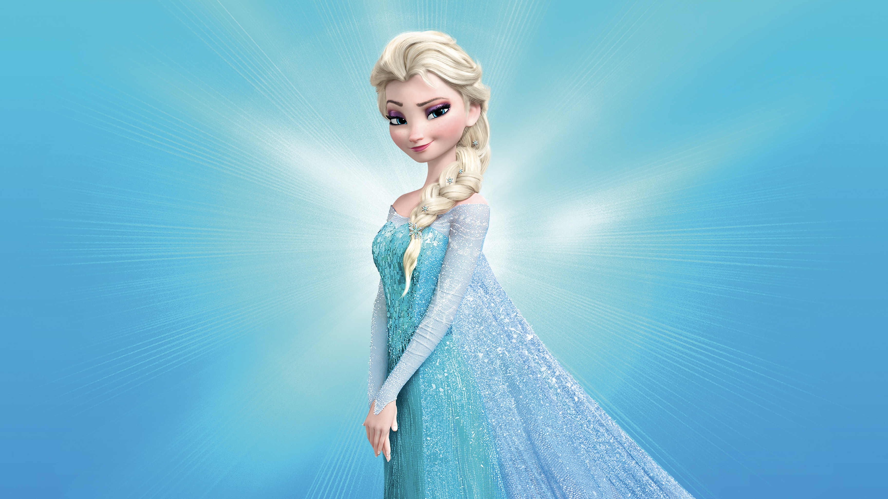
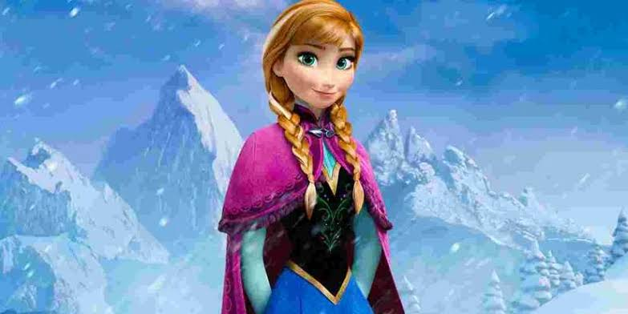
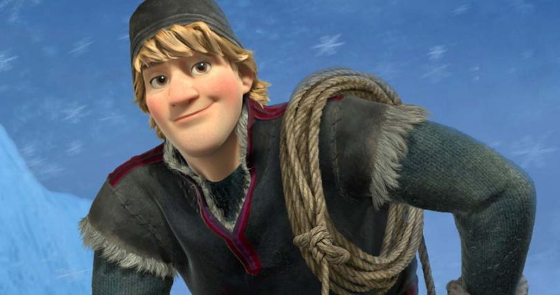
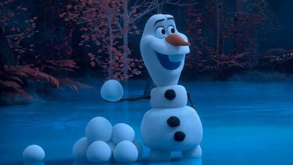
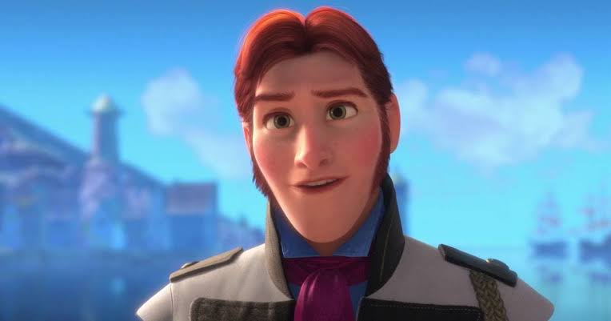

Elsa

Elsa é a irmã mais velha de Anna e a rainha de Arendelle. Ela possui poderes mágicos que permitem criar e controlar gelo e neve. No início da história, Elsa tem dificuldade para aceitar seus poderes, mas aprende a lidar melhor com eles ao longo da aventura.
Anna

Anna é a irmã mais nova de Elsa. Ela é alegre, corajosa e determinada. Quando Elsa foge, Anna parte em uma aventura para encontrá-la e tentar salvar Arendelle.
Kristoff

Kristoff é um jovem que vive nas montanhas e trabalha comercializando gelo. Ele ajuda Anna em sua jornada e se torna um dos personagens importantes da história.
Olaf

Olaf é um boneco de neve criado pelos poderes de Elsa. Ele é muito divertido, otimista e sonha em conhecer o verão, apesar de ser um boneco de neve. Ele possui uma personalidade muito amigável.
Hans

Hans é um príncipe que conhece Anna durante a história. Inicialmente ele demonstra interesse por ela, mas suas verdadeiras intenções são reveladas ao longo do filme.